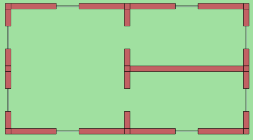
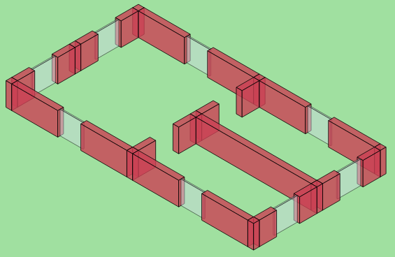

There are situations in real life when the environment has an effect on the communication. For example, wireless communication in buildings. Obstacles like walls can obstruct radio waves. The physical environment module is responsible for simulating the effect of objects that have an effect on the communication. And thus the course of the simulation. These objects are visualized by the xy visualizer module.
There are situations in real life when the environment has an effect on communication. For example, this is the case when wireless devices communicate in buildings. Obstacles like walls can obstruct radio waves. The physical environment module is responsible for simulating the effect of objects on the communication. Visualizing the objects in the enviroment is essential to understanding what is happening in the simulation.
Physical objects like walls can obstruct radio waves, having a profound effect on the communication of wireless nodes. The PhysicalEnvironment module is responsible for placing physical objects in simulation models. Visualizing these objects is essential to understanding how the environment interacts with transmissions.
Physical objects can obstruct radio waves, having a profound effect on the communication of wireless nodes, e.g. wireless devices communicating in a building. Physical objects can be placed in simulation models. Visualizing these objects is essential to understanding how the environment interacts with transmissions.
It provides the 3D coordinate // system's 2D projection for other visualizers.
The PhysicalEnvironmentVisualizer is responsible for displaying the physical objects on the canvas. The objects themselves are provided by the PhysicalEnvironment module. Objects are represented in 3 dimensions, their 2 dimensional projections are handled by the SceneCanvasVisualizer module. By default, objects are projected to the 2 dimensional plane "from above", i.e. the view angle is the x axis.
This configuration demonstrates the default visualization of objects. The objects are defined in the indoor.xml file, and represent an appartment with 3 rooms. The network contains just two modules, a PhysicalEnvironment and an IntegratedVisualizer module.
When the simulation is run, the network looks like this:
In this configuration, the viewing angle is set to isometric view. This is done by setting the viewAngle parameter in the SceneVisualizer:
When the simulation is run, the network looks like the following:
The 3 dimensional structure is projected to 2 dimensions with an isometric projection.
TODO